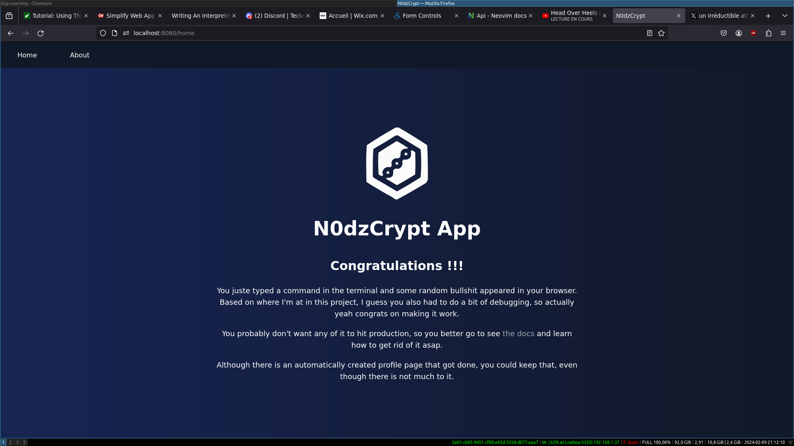

WilkArnold
Développeur HTML Fullstack en recherche d'alternance
CDA RNCP niveau 6
Éligible à la prime de 6000 euros
- 30 ans
Nantes
dispo dès maintenant
Compétences acquises :
Rust
Golang
Leptos
Templ
Tailwind
Ocaml
Compétences en cours d'acquisition :
Se doucher
Toucher de l'herbe
Arnold en quelques points clés
À propos de Arnold
Les expériences passées de Arnold
Développeur coucheur (2022-2023) Basic Fit :
Support(2018-2022) Riot Games :
Arnold vous présente ses projets
N0dzcrypt, the java scripting framework
What is N0dzCrypt ?
N0dzCrypt CLI tool to enhance Fullstack developpement of Java based webapps.
It makes use of particular set of old technologies and enhances them to allow you to create new WebApps
based on the REST and HATEOAS principles while allowing you to create an UX similar to that of an SPA.
It also gives you ways to improve old Java webapps by offering a way to transform them into SPA-like app.

What technologies does it use ?
- Any SGBDR as the database.
- Spring Boot as the backend.
- Maven as the java dependency manager.
- Thymeleaf as the templating language.
- Tailwind as the CSS framework.
- Vanilla Javascript as the driver of client interactivity.
- HTMX as the engine of application state.
What can it be used for ?
1) Enhance
There is a lot of old MPA webapps still using Thymeleaf that could get some help getting into the modern
age. Most of these apps look and feel old, and are no match for modern webapps. Most of them are considered
legacy apps, and are replaced by a frontend using a classical Javascript framework. But if instead of rewriting the
whole app, you could just enhance the old code to make it similar to every other SPAs ? That's the promise of the
N0dzCrypt tool.
2) Create
BootStrapping a webapp usually involves creating two separate apps, one for the front, and another for the back.
That means, even if the app ain't that large, you'll have to get a frontend and a backend team with quite a lot
of experience in ops, because the deployment and testing of two separate apps with multiple build steps can get quite
complex (especially if your frontend uses things like typescript and JSX).
Also, if you want some of your frontend devs to be able to add or improve some backend code, you'll get locked into
a Javascript backend, which can be quite cumbersome, as it usually involves the slowness of node, mess of dependencies
of npm, and the weird quirckiness of Javascript.
With N0dzCrypt, you can get rid of all of that, while maintaining the best of what the Javascript ecosystem can offer you.
Recommandations et Certifications
ODDET Rossi, Formateur chez Diginamic
PLOUF Jean-Michel, Covoitureur Blablacar
La personalité de Arnold (Test MBTI)
Inspirateur : ENFP
Énergie : 51% Extraverti
Introvertis
Extraverti
Esprit : 82% Intuitif
Intuitif
Observateur
Nature : 69% Sentiment
Pensée
Sentiment
Tactique : 71% Prospection
Jugement
Prospection
Identité : 63% Assuré
Assuré
Prudent
Plus d'informations : voir le résultat du test